中秋节的养生，实际上就是仲秋的养生，主要是指在秋分之后的一个月，我们应该做的事情。
现在过中秋节，好像主要就是全家人在一起吃个月饼。而按照传统民俗来说，中秋节的内容就非常丰富了。
它主要是做以下五件事情：
第一，拜月神。
第二，分月饼。
第三，品螃蟹。
第四，赏桂花。
第五，偷冬瓜。
为什么我们要拜月神呢？其实从养生角度来说，拜月神的时候供奉的供品才是重点。因为拜完月神之后，这些祭拜所用的供品是被我们吃掉的，借此机会让人们吃一些秋冬季节养生的食物。
虽然各地民间拜月神的习俗都不相同，但是通常来说，除了螃蟹，祭祀的供品里头有几样是非常常见的，那就是月饼、冬瓜、柚子、芋头和栗子。中秋节的时候，如果全家人一起吃饭，可能会喝一点酒，这时候就会用桂花做的醒酒汤来给大家醒酒，解酒毒。
这几样实际上都是秋冬季节养生使用的食材。
冬瓜是为了清热祛湿；柚子是为了消积止咳；栗子在整个秋冬季都很适合多吃，它是补肾壮骨的；螃蟹是为了滋肝养胃；而桂花在紧接着的寒露节气，是可以养肺调肝的。
其实，传统的民俗，基本上都有其养生的道理在里面，后来经过时光的风化，人们就只知其一，不知其二了，一来二去就把月饼变成了中秋节的主角。
在中秋节的民俗中，最有趣的就是偷冬瓜。
偷冬瓜事实上是一个趣味游戏，并不是真的去偷。在中秋节的时候，邻里之间互相帮助，摘取对方地里的冬瓜，然后把它煲汤来喝。
大家认为，这样吃了冬瓜以后，身上就不长包、不长疮了，皮肤还会特别好。还有的地方讲究偷了冬瓜后，要送给没有孩子的人家，叫作送子。认为谁家不生孩子，吃了这个冬瓜以后就会有孩子了。
虽然这是民间的美好传说，但事实上也是有养生道理的。偷冬瓜游戏无非是鼓励大家在中秋的时候，把夏天的老冬瓜再吃一些。因为多吃冬瓜真的会让人皮肤变好，更能促进人的生育能力。
虽然叫作冬瓜，但事实上它是夏天成熟的瓜，适合在夏天来吃。只是因为它表面上有一层白霜，像冬天的霜雪一样，就把它称为冬瓜了。
冬天不宜多吃冬瓜，但是在中秋节这段时间，如果您感到自己身体的湿气还很重，特别是在仲秋这一个月，觉得身体的水液代谢极不平衡，可以适当地吃一点冬瓜。
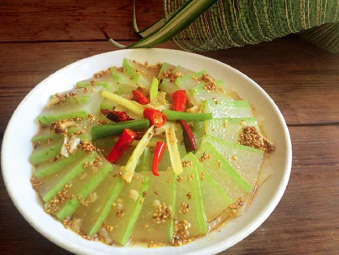
经过一个夏天的炎热后，如果您在初秋祛湿的工作没做好，或者是身体里的湿气由于长年累月地积累比较重，那么，湿和热就会结合在一起，变成湿热积聚在体内。
如果我们不及时把湿热排掉，它们就会逐步地往下走，走到人体的下焦——肾系统和膀胱系统。
湿热就像一汪浊水会污染肾系统和膀胱系统，引起各种各样的炎症，比如，膀胱炎、尿道炎、肾盂肾炎，以及女性的阴道炎、男性的前列腺炎等。
有时候，浊水是看得见的。比如，下焦有湿热，我们的小便会发黄，甚至有的人小便时还会痛；女性白带增多、发黄，有异味；这种浊水有时候也会往上影响我们的面部，导致下巴长痘痘，会有脓等。
而更多的时候，我们看不到这些湿热的浊水，因为它们隐藏在我们的肾和膀胱内作怪。有时候它引起的炎症并不会让我们有多大感觉，但是，身体会用各种信号来提醒我们。比如，一个人长期有生殖系统的炎症，就会觉得腰酸，或者小腹有隐痛；而有的朋友皮肤容易出问题，会在腰间、面部长湿疹；更严重的是在生育上会很困难。
以上种种，都是身体给我们的信号，告诉我们身体内有浊水了，有湿热了。
这时候可以适当地吃一点冬瓜。
冬瓜能帮助人体排出浊水，清热解毒，防止湿气在人体内继续潜伏到冬天。
当我们的下焦没有浊水了，生殖系统的炎症好了，自然就能生育了，这也是民俗说吃冬瓜送子的一个深层次原因。
而当我们把身体的湿热祛除后，皮肤也会变好，不容易长包、长疮、长痘了。
吃冬瓜的时候要注意，冬瓜的皮和肉是有区别的。冬瓜皮偏凉一些，祛湿的作用比较好。因此，湿热重的人，就要带皮一起来煮；如果湿热不是特别重，就可以去掉皮。
冬瓜其实还有润肺、化痰、止咳的功效。如果您有咳嗽、痰黄的情况，煲冬瓜汤时就要注意留下冬瓜皮，效果会更好。
每年一到中秋，也就是我们要吃螃蟹的时候了，不仅这会儿螃蟹最为肥美，而且在这个时节人体需要养阴，需要滋阴，而螃蟹正是滋阴的。
现在一说到吃螃蟹，人们想的都是大闸蟹，其实在市场上，一些小螃蟹也是可以吃的，不需要像吃大闸蟹那样慢慢地剥开吃，我们可以把小螃蟹做成蟹汤来喝。
比如，小河蟹，或者海蟹里的花蟹，它们都比较小，肉比较少，壳相对较大。这种小螃蟹您要直接吃会觉得食之无味，而煲汤就成了一个好选择，而且适合吃的人更多。因为相较于很寒的大闸蟹，普通的小螃蟹是没有那么寒凉的。
送子蟹汤，很适合用小螃蟹来做。特别是和冬瓜放在一起，它们真是一对好搭档，用中医的话来说，叫同气相求。
吃螃蟹有时候容易让人过敏，如果把冬瓜和螃蟹一起来煲汤，是能解除螃蟹的这种发性了。
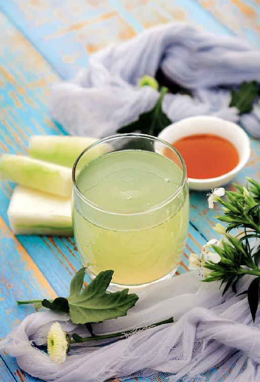
有的朋友觉得这道汤效果这么好，问是不是要天天喝。
其实，真的不要天天喝，因为这道汤太补了。我说过它相当于六味地黄丸的效果，所以一个星期喝一次就可以了，一直喝到立冬的时候。
如果遇到感冒、咳嗽痰多、拉肚子、大便稀溏不成形等情况，就暂时别喝。
送子蟹汤
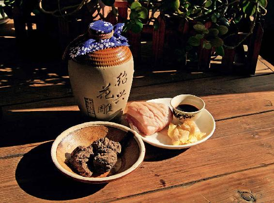
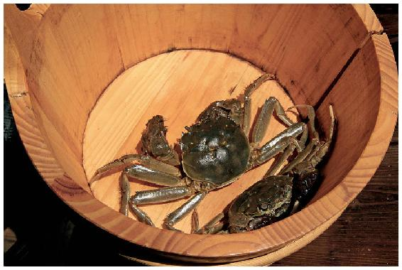
原料：螃蟹250克、冬瓜250克、生地30〜60克、生姜、黄酒、肥肉一小块。
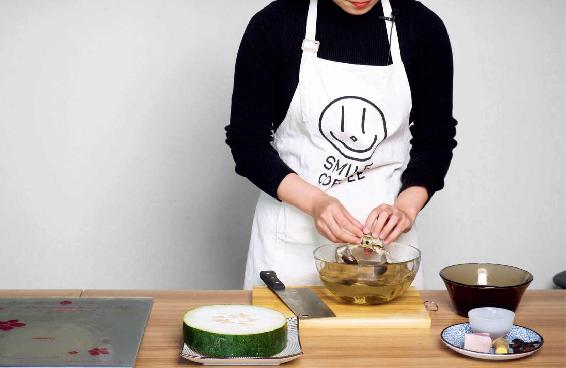
做法：
1.先把螃蟹泡在水里头，给它换几次水，以吐净脏的东西，然后再用醋水泡上半小时，之后再用加了醋的热水给它冲洗一下，要冲洗得干干净净的。之后去掉螃蟹的鳃和内脏，切成块状。
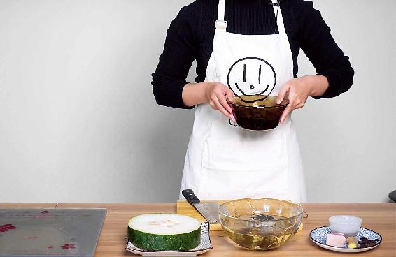
2.把生地用清水泡一泡，因为干品的生地比较硬。然后连泡的水一起下锅，再放入一小块肥肉，一起熬半小时，让生地充分地出味儿。
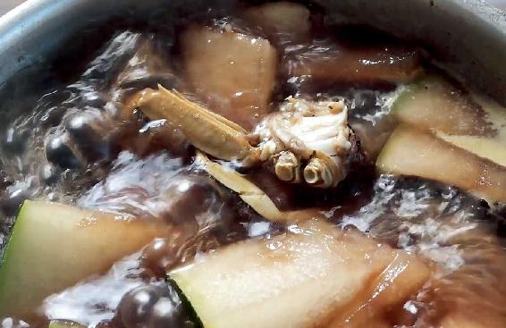
3.水开后放入螃蟹块、冬瓜块和一块拍扁的生姜，放一点点黄酒，然后一起煮上半小时。如果您是不怕寒凉的朋友，冬瓜可以带皮一起煮。
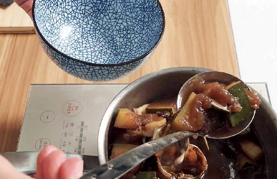
4.起锅之前，放一丁点盐来调味，如果您不喜欢咸味也可以不放。这里面的冬瓜和螃蟹都是可以吃的，而生地就不需要吃了。
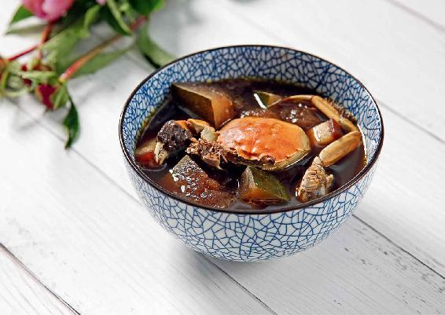
送子蟹汤的滋补作用是偏于滋阴的。
螃蟹非常滋阴，冬瓜是清热祛湿的，而生地也是滋阴的，它们合在一起，就有一个补肾阴的功效。
如果您是正在备孕的朋友，建议秋季可以经常喝一喝这道汤。有朋友曾经给我反馈，说她喝了送子蟹汤后，很快就怀孕了，当时她特别开心。
当然，这道汤并没有让人马上怀孕的功效，它只是把人的肾脏给调理好了，祛除了湿热和炎症，那么身体自然就给怀孕创造了非常好的环境。
不准备怀孕的朋友，可不可以喝这道汤呢？也是可以的。
因为这道汤是滋阴调肝肾的，如果您觉得自己阴虚，容易有虚热，或者是觉得肝肾不足，都可以喝这道汤。
有的朋友容易发作有热毒的那种皮肤病，如长疮，那么也可以喝这道汤。
其实，这道送子蟹汤全家老小都可以喝，虽然我把它比作六味地黄丸，但是它并没有药物的那种局限性，也不会吃出不良反应，所以您可以放心地给孩子喝，给孩子清热解毒；也可以放心地给老年人喝，因为老年人通常都会有一点阴虚，有一点肾虚的。
中秋时节，您不妨在全家人一起吃饭的时候煲上这么一道滋味鲜美的汤给大家品尝。
读者评论：喝了送子蟹汤，困扰我多年的妇科病竟然好了
田：喝了送子蟹汤，困扰我多年的妇科病竟然好了，而且至今没有复发。腰腿也有力了，整个人精神状态特别好。
一丹_k：国庆假期喝了冬瓜送子蟹汤，感觉很舒服。
允斌解惑：送子蟹汤可以用大的海蟹
我是Irene：陈老师，我现在住在加拿大，但我很喜欢你推荐的食方，这道送子蟹汤可以用大的海蟹吗？
允斌：可以的。
佳泽：送子蟹汤吃不完，能放冰箱第二天吃吗？
允斌：可以的。
贵玲：送子蟹汤只适合秋季吗？如果想要宝宝，可不可以不分季节喝送子蟹汤？
允斌：夏天喝姜枣茶暖宫较好。
周周：送子蟹汤出锅前是否可以加点盐调味？
允斌：当然可以。
中秋节，团圆家宴可以给家人准备哪些饮食呢？银耳莲子羹、传统馅料的月饼、送子蟹汤、桂香醒酒汤，都是不错的选择。
首先，从仲秋这个月开始必吃银耳和莲子。其次，中秋节吃月饼，要吃养生的月饼，也就是以补肺气的原料为馅料的月饼，比如蛋黄莲蓉月饼、五仁月饼等等。
在中秋家宴的时候，全家人还可以一起吃螃蟹。因为螃蟹不仅鲜美，还有非常好的食疗功效。它可以滋补肝阴，滋养胃液，活血化瘀，养筋接骨。对于肾阴虚的人来说，也是一道很适合的补品。如果是全家老小一起吃，那最适合的就是煲一道送子蟹汤。
节日期间，还可以多吃一些应时的养生瓜果，比如，冬瓜、莲藕、芋头、栗子、莲子、葡萄、柚子等等。
最后，还要准备桂花，因为在中秋的家宴上，如果喝酒了，那么桂香醒酒汤就可以帮助大家来解酒。
中秋节赏桂花是一件非常赏心悦目的雅事。
我到现在还记得，很多年以前，有一次我去杭州，经过了一个叫满觉陇的风景区，它是一个山谷。山谷中的道路两边全都是桂花树，漫步其中，花香就像下雨一样落在人的身上，所以这道风景也叫作满陇桂雨。这种感受真的非常美妙。
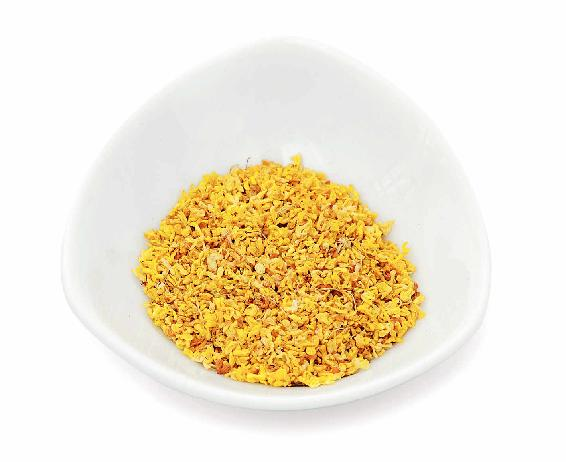
1.桂花可以开窍、解郁
其实，在任何时候闻到桂花的香气，都会让人非常舒心。古人把桂花的香气称为天香，就好像是天上下来的神仙带来的香味。
桂香对我们的身体也是有很多好处的。
闻桂花的香气可以开窍，可以解郁，让我们的口腔、鼻腔都非常畅通，人的心情也会变得舒畅。
特别是秋天气温下降后，如果人体受寒了，觉得鼻子好像有点不通，就可以闻闻桂花的香气。它能马上疏通我们的鼻子，这是见效非常快的一种调理方法。
2.桂花能暖胃、健胃
桂花是要品的，什么叫“品”呢？就是品尝。
传统上，如果我们想给糕点等食物添加花香的话，最常用的选择就是桂花。
为什么要用桂花呢？因为桂花不仅香，还有暖胃和健胃的作用。特别是由肝气的影响造成的脾胃问题，用桂花来暖脾胃，是最为合适的。
在长假游玩的时候，如果经过桂花林，一定要多停留一下，充分地吸收它的香味。同时，家里也要准备好桂香醒酒汤，随时随地可以给家人解酒。
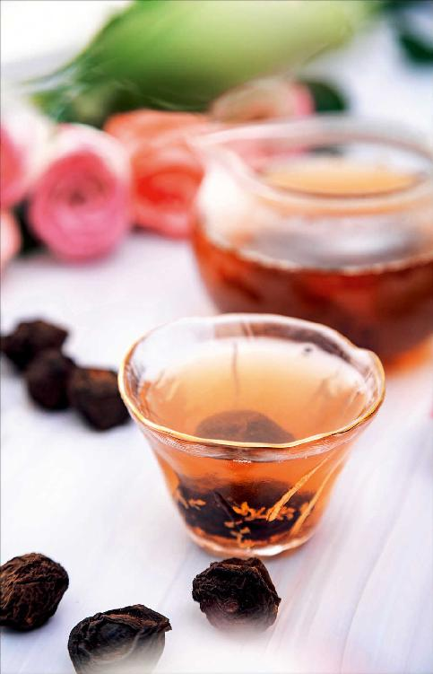
桂花，我们可以去超市买干品，或者采摘新鲜的用，但您要注意，刚摘的桂花要放上一两个小时，让里面的腻虫全部爬出来，再用淡盐水泡洗之后，才可以使用。如果买不到干桂花，也可以去买那种瓶装的糖桂花，当然糖尿病患者最好用干的桂花茶。
这道汤不仅可以用来醒酒，在中秋节大家吃饭，吃油腻了，肠胃不舒服，也是可以喝的，小孩子也可以喝。
桂香醒酒汤
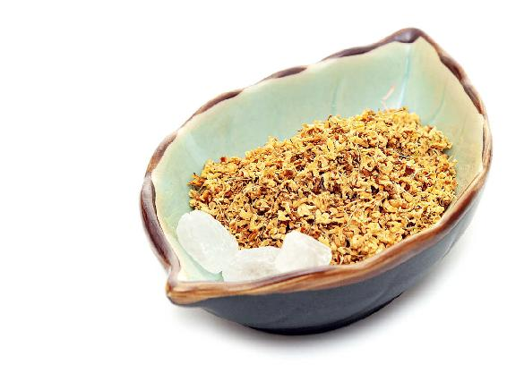
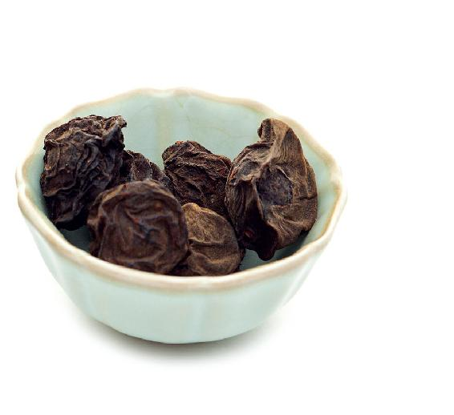
原料：桂花3克、冰糖3粒、乌梅6个。
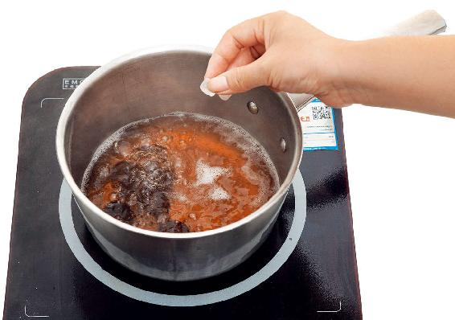
做法：把乌梅放入锅中，煮成乌梅汤。然后加入冰糖，再煮一会儿。等起锅的时候，再撒入桂花。这样不会破坏桂花的香气。